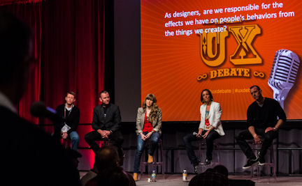

UX in the City
The Great UX Debate and six local meetups that all run in parallel across town.
Thursday night will be special. We've joined forces with SapientNitro and the best local meetups to find out what the Dutch design, art and technology scene is all about.
Seven events make up UX in the City and take place simultaneously at different locations across the city center of Amsterdam. Pick one you'd like to attend, there's something here for everyone.
Access to the UX in the City is free for Interaction14 attendees, but — as capacity is limited — you must sign up before you arrive. First come, first served.

The Great UX Debate
We're very pleased that SapientNitro will once again organize a Great UX Debate at Interaction14, Amsterdam.
Join a panel of industry experts and over 200 practitioners, to play your part in resolving some of the toughest debate statements the UX community can muster!
Get up to speed on all the pre-debate banter by following @UXDebate on Twitter.
The Great UX Debate is brought to you by
Appsterdam Meet the Makers: Game Changers
You have come to the best place in the world to be and become an App Maker. Appsterdam brings together designers, engineers, and businessmen involved in creating apps.
“If you want to make movies, go to Hollywood.
If you want to make musicals, go to Broadway.
If you want to make apps, go to Appsterdam.”
— Mike Lee, Mayor and founder of Appsterdam
The Appsterdam Meetup is a casual get together with some drinks hosted by Appsterdam in their HQ in A Lab (next to EYE, free ferry ride).
Meet the makers from the local gaming industry. These game changers will talk about their apps, their philosophies, and share their insider knowledge into the gaming world:
- Leonie van de Laar and Natasja Corver — TitaToys;
- Mike Lee — New Lemurs,
- Jan-Pieter van Seventer — Dutch Game Garden.
This happened
‘This happened’ is an evening about the creative process — the journey from idea to final result, with a focus on the adventures that took place in between. Four carefully selected makers of interactive projects (artists, designers, architects, hackers, developers or other creators) will tell their story and discuss their process with you, the audience.
Don't expect final outcomes, but do expect revelations about the twists and turns in their 'makings of' — featuring sketches, video documentation and live demos — and a lively conversation with other makers in the audience.
- Luna Maurer will talk about the ever-growing animation film Your Line or Mine, which is drawn by visitors of the Stedelijk Museum Amsterdam.
- Christian Eckert will talk about designing a next-generation automotive interface.
- Pieter Jan Pieters will present The Social Project, where online media will disappear and we enjoy being social again.
- Marie de Vos will talk about dynamic boarding information above train platforms.
This happened is hosted by arts center De Brakke Grond.
Amsterdam UX Cocktail Hours
Amsterdam UX Cocktail Hours is a meetup for User Experience practitioners in and around Amsterdam who like to get together informally, share news and ideas through short presentations, meet other UX practitioners, chat about work, the weather and koetjes en kalfjes and have a drink (or two).
At this evening Christina Wodtke will present "The Mechanics of Magic: Lessons from Game Design". Christina is author of "Blueprints for the Web" and has held senior management positions at companies such as Yahoo!, LinkedIn, MySpace and Zynga.
Amsterdam UX Cocktail Hours is hosted by Osudio.
Behavior Design AMS
Techno optimism and the engineered society go hand in hand. With technology's rising presence, it can be used to change our behavior as well. Most of the time we didn't even notice the designer's hand at play.
Behavior Design AMS brings together people with different backgrounds. Research and practice, online and offline — people with different ideas and perspectives so that we can all share and learn. Program of this night:
- New behavior for designers — Froukje Sleeswijk Visser, TU Delft.
- Using sensors for behavior change — Joris Janssen, Sense OS.
- Steering shopper behavior with technology, data and science — Arjan Haring, Science Rockstars & Boris Surya, Monolith.
Chi Café
Chi Café aims to create a bridge between user experience, human-computer interaction, and other fields. You will be able to see presentations that go beyond traditional HCI and UX, which will hopefully open up your horizon. Chi Nederland welcomes anyone interested to attend and present.
- Dick Rijken and Jos van Leeuwen do research on teaching Interaction Design students conceptual design thinking. They will present the Frame Creation Method (FCM), particularly useful for solving complex and wicked problems.
- STEIM's Kristina Andersen (Instruments and Interfaces) and musician Jan Klug will discuss and use different kinds of hybrid instruments: old/new, digital/analog, clean/dirty. Jan's live performance will feature different technologies from many different periods in the history of electronic music.
Making Progress
The documentary ‘Making Progress’ by Dutch service design studio 31volts tells the story of innovators and the way they look at the process of making and taking steps to advance.
Featuring the stories of a food technologist, a professional adventurer and a game designer, Making Progress tries to answer the question that keeps us busy every day — how do we go about innovating successfully?
The screening and inevitable discussion at the end of Making Progress (subtitled in English) are kindly hosted by Q42, their swing and their slide.